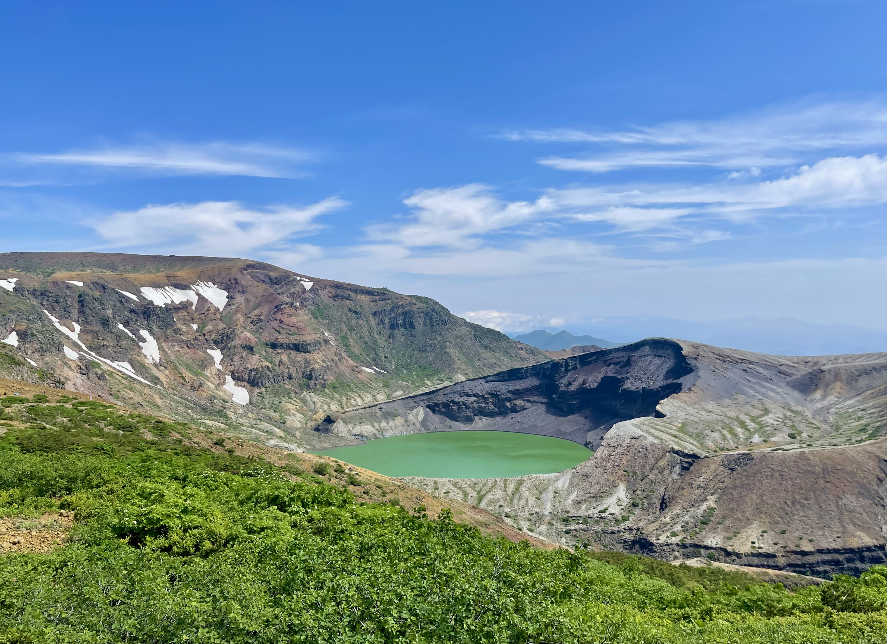
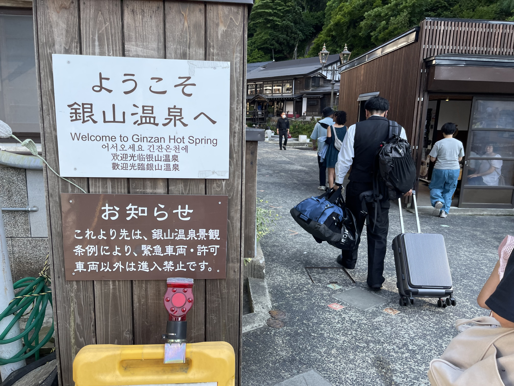
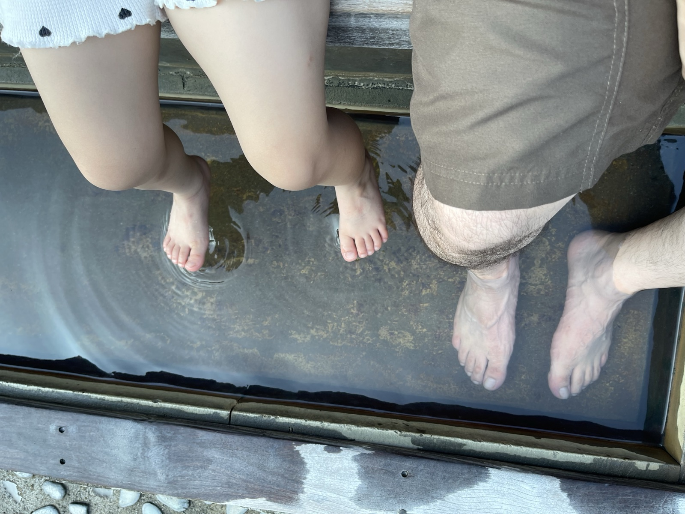

山形県への2日間の旅。目的は蔵王の御釜（おかま）と銀山温泉だ。どちらも「いつか行きたい」リストに入れたまま後回しにしていた場所で、ようやく訪れることができた。
蔵王温泉 — 大露天風呂

初日はまず蔵王温泉の大露天風呂へ。蔵王温泉は強酸性の硫黄泉で、その源泉そのままを使った野天の露天風呂だ。深い森の中に石組みの湯船があり、白濁した湯が満たされている。湯に浸かりながら木々の間から空を眺める開放感は、日帰り湯とは思えない質感だった。
蔵王温泉の泉質はpH1台という強酸性で、肌がピリッとする独特の刺激がある。雑菌に強く「美人の湯」としても知られる。入浴後は肌がすべすべになる感覚があった。
蔵王御釜 — 火口湖の神秘

翌朝、蔵王エコーラインを上がって御釜へ。刈田岳・熊野岳・五色岳に囲まれた火口湖で、エメラルドグリーンの水が張っている。「五色沼」と呼ばれるように、天候や光の当たり方によって色が変わるという。
訪れた日は快晴で、まだ山肌に雪が残っていた。火口壁の向こうに広がる緑の湖は、見た瞬間に「本物だ」と感じさせる色をしていた。強酸性（pH約3.5）で生物はほとんど生息できない湖だが、その異質さが逆にこの景色の美しさを際立てている。
銀山温泉へ

御釜から車で約1時間半、銀山温泉に到着した。山形県尾花沢市にある温泉地で、大正時代の木造多層建築の旅館が銀山川沿いに連なる景観で知られる。景観保護のため一般車両は入口で止まり、徒歩で川沿いの温泉街へ向かう。


温泉街の奥には白銀の滝がある。新緑に囲まれた滝が轟音と水しぶきをあげていて、温泉の熱気を一瞬忘れさせてくれる涼しさがある。川沿いには無料の足湯もあり、散策で疲れた足をそこで休めた。
夜の銀山温泉

銀山温泉の本領発揮は夜だ。日が落ちると温泉街の灯りが点き、橙色の光が川面に映る。大正時代に建てられた木造多層建築の旅館が並ぶ景観は、映画や小説の舞台になったかのような非日常感がある。観光客も夜になるとカメラを構えた人々が増え、それぞれが自分なりの角度を探していた。
訪れる前は「混んでいそう」という先入観があったが、夜の光景はその混雑を忘れさせるほどだった。蔵王の火口湖と、この温泉街の夜景。山形はいい場所だと思った。